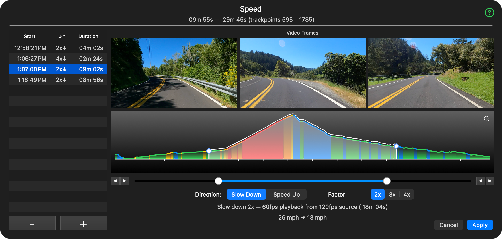

This panel simultaneously applies speed adjustments to video and GPX segments.
Primarily intended for videos recorded at 120 fps from cars, you can slow down to more appropriate speeds on the flats and uphills as needed.
If you make a walking video you would like to speed up for cycling, it can do that as well.
Move your pointer over the images above to see feature explanations.